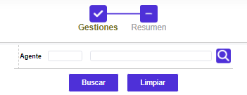
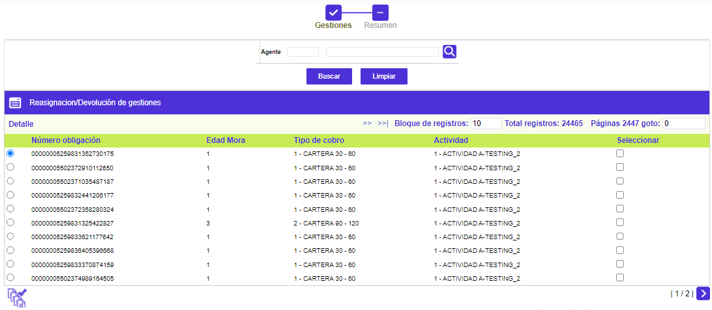
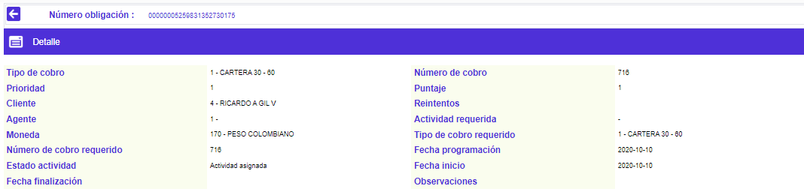
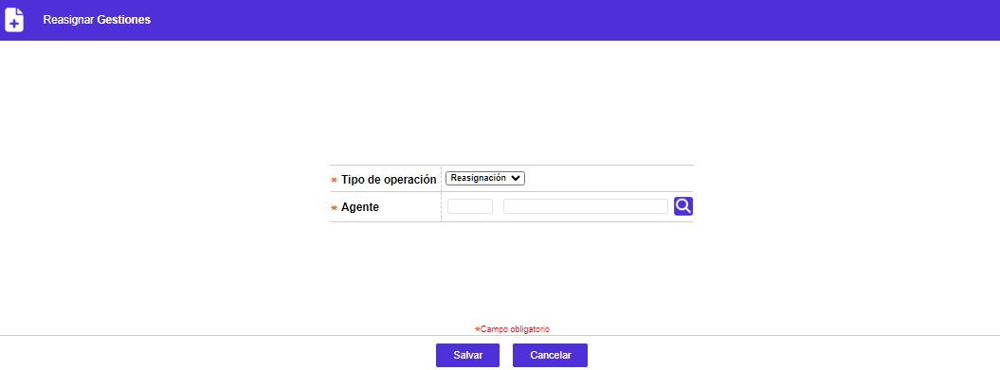
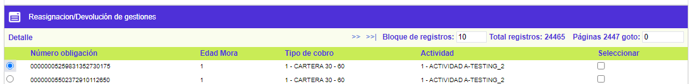

|
Reasignación de la cobranza |
Este formulario permite reasignar o devolver actividades de una obligación para que sea gestionada por otra casa de cobranza o agente. La información presentada en la pantalla se despliega con la simple invocación de la opción y el único campo al que se tiene acceso es la casilla de verificación que aparece al final de cada registro del bloque Gestiones asignadas.
Filtro: El formulario wizard tiene dos pasos titulados Gestiones y Resumen; adicionalmente cuenta con un filtro inicial de búsqueda necesario para la consulta de la información:

|
Agente |
Campo que permite filtrar a través de los diferentes registros creados por medio de la opción Agentes de cobro. |
Gestiones: El formulario contiene las opción Detalle y un botón para Reasignar/Devolver todas las gestiones.

Detalle: Si el usuario invoca la opción Detalle se despliega el siguiente formulario.

Reasignar/Devolver todas las gestiones: Al presionar el botón especial de Reasignación / Devolución, se despliega la pantalla ilustrada, la que permite materializar la decisión correspondiente.

|
Tipo operación |
Lista de valores con dos opciones. Reasignación: Campo mediante el que es posible indicarle al sistema, que la o las obligaciones señaladas, van a ser asignadas a otra casa de cobranzas. Devolución: Permite registrar en el sistema la o las obligaciones que son devueltas por la casa de cobranzas a las que estaban asignadas. |
|
Agente |
Campo con lista de valores, poblada a través de la opción Operadores de cobro, de la que debe seleccionarse la casa de cobro a la que es trasladada la o las obligaciones marcadas. La lista de valores despliega todas las combinaciones posibles entre casa de cobro, moneda, mora y tipo de cobro, obviamente, excluyendo la combinación actual o previa a la reasignación. |
Resumen: Es el segundo formulario del wizard, que despliega la siguiente información, de acuerdo a las tarjetas en gestión que hayan sido seleccionadas en el primer paso. Cuenta con una opción para Remover aquellas tarjetas que finalmente no se requieren reasignar o devolver:
